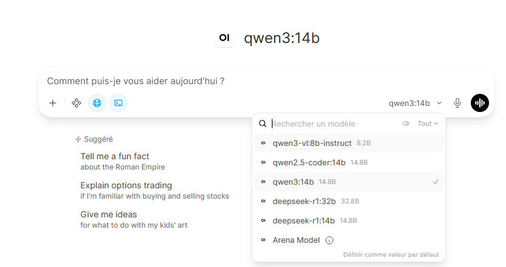

Expérimentation personnelle · Septembre 2026
L’IA en local
Faire tourner des modèles d’IA sur ma propre machine pour explorer leurs réglages, observer leurs performances et confronter les promesses aux limites de mon matériel.

Des promesses à l’expérimentation
Après avoir testé ChatGPT dans sa version gratuite, je voulais découvrir l’IA en local. Quelles performances pouvais-je obtenir ? À quel coût ? Les vidéos qui en parlaient étaient-elles trop élogieuses ?
Le meilleur moyen de me faire un avis était de l’essayer sur ma propre machine.
Un environnement simple à prendre en main
J’ai opté pour une installation avec Docker, Ollama et Open WebUI : une solution que j’ai trouvée simple et efficace pour commencer mes essais.
J’ai mis en place NVIDIA CUDA pour utiliser l’accélération GPU, puis testé le débordement du GPU vers le CPU avec des modèles plus volumineux.
Explorer les modèles et leurs réglages
J’ai testé différents modèles, regardé les tokens défiler et surtout pris plaisir à explorer les paramètres et les réglages fins de chacun.
Cette expérimentation m’a permis de mieux voir les possibilités et les limites de mon installation. Malheureusement, mes 16 Go de VRAM m’ont vite limitée dans les modèles que je voulais essayer.
Chercher d’autres possibilités
J’ai regardé du côté de la location de GPU, mais aussi de solutions de fortune autour de Kaggle. Un rapide calcul des coûts et du temps à y consacrer m’a finalement fait estimer que ces pistes avaient peu d’intérêt pour mon usage.
En parallèle, j’en discutais avec un ami qui a testé le projet Qwen de MiaAI-Lab pour GPU NVIDIA de 16 Go. Mon impression à l’issue de nos échanges : c’est amusant pour créer de petits jeux comme Snake, mais cela restait loin de ce que j’avais envie de faire.
Une équipe d’agents, une idée en attente
J’aurais voulu associer une IA locale à Claude pour confier les tâches les plus simples au modèle local, décharger l’agent principal et économiser des tokens.
J’ai donc exploré les « harness », les environnements qui permettent d’organiser et de piloter des agents. L’idée était de créer une équipe avec un chef d’équipe et différents agents à qui répartir le travail. J’ai laissé cette piste de côté pour le moment.
Mon bilan
Pour mes usages et avec mon matériel, je trouve l’IA locale peu avantageuse économiquement, notamment en tenant compte du coût de l’électricité pour un particulier en France.
Pour un petit assistant personnel, je pense toutefois que cette approche pourrait convenir.